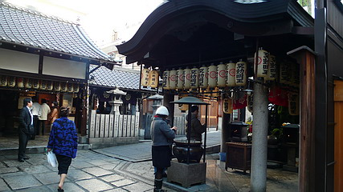

水掛不動尊/大阪府大阪市
大阪のど真ん中、法善寺横町。
よく夫婦善哉が引き合いに出されるが、私は読んでません。
数年前の火事以降行ってなかった法善寺横町に久々に行ってみた。

法善寺横町といえばこの水掛不動尊。
この寺で千日ごとに法要をしていたから千日前という地名が生まれたのだという。
要するにミナミの原点みたいなお寺だったのだ。
水掛不動は文字通り水を掛けて願い事を叶えてもらうのだが、そこは大阪一有名な不動サマだけにお参りに来る人の数も半端じゃない。
で、こんなんなっちゃいました…
苔がみっしりと。
コレが鬱蒼とした山の中にある石仏ならともかく１日に何百何千という人が通る都会のど真ん中にある石仏だというのだから驚くほかない。
毎日水を掛けられ続けると石ってこういう風になっちゃうんですね。
不動サマの後のファイヤーも苔がむしている。
そういえば何で火の神であるお不動さんに水を掛けるんだろう…
隣にいる眷属も水掛のとばっちりを受けてこの有様。
この日は休日だったので次から次へと沢山の人がお参りに来ていた。
時としては行列が出来るほどの混雑ぶり。
度重なる戦災や火災や時代の波を潜り抜けてきたお不動さん。
きっと皆さんが一生懸命水を掛けていたからでしょう。
大阪で一番崇められている像かもしれない。
そんなの当ったり前過ぎて珍しくも何ともないわ！
…とのお嘆きの声も聞こえてきそうなので、とりあえずコレで勘弁してけろっ！
ロケ地；南田辺
2007.11.
追記；2008.6.17.
このページをアップした後、水掛不動尊の眷属である童子像が何者かによって破損されました。
幸い早急に修復された模様だが、大変残念な事である。
そんなことして神仏よりも偉くなったつもりなのだろうか。罰当たり者め。
珍寺大道場 HOME